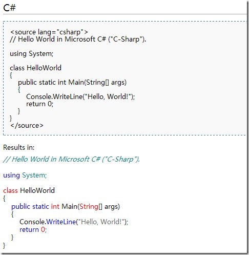

用MediaWiki有一段时间了,整理几个必备插件,做个备忘.
SyntaxHighlight_GeSHi 代码高亮，使用相当方便
效果见图

下载方法:SVN Checkout就行，SVN地址:
1: http://svn.wikimedia.org/svnroot/mediawiki/trunk/extensions/SyntaxHighlight_GeSHi/
用法,修改LocalSettings.php,加入下面的代码。
1 | require\_once("extensions/SyntaxHighlight\_GeSHi/SyntaxHighlight\_GeSHi.php"); |
FCKeditor
高级编辑器,MediaWiki默认的那个实在是简单的惨不忍睹
效果：
对比一下原来的：
差距大吧…
下载地址:
1: http://mediawiki.fckeditor.net/nightly/svn/mediawiki\_fckeditor\_ext\_N.zip
2: http://svn.fckeditor.net/MediaWiki/trunk （SVN地址）
使用方法：
首先下载最新版的FCKeditor，解压，然后拷贝全部文件到extensions\FCKeditor\fckeditor文件夹。
然后修改LocalSettings.php,加入下面的代码便可。
1: require_once( “extensions/FCKeditor/FCKeditor.php” );
图片扩展
MediaWiki添加图片是在是不方便，用了LinkedImages就方便多了。加了这个插件后引用图片就可以这样来写：
1 | <linkedimage\> |
怎么样，方便吧。
- 下载以及安装方法见链接
Cooltable
小插件一个。它的主要功能就是给MediaWiki的表格增加了一个特效，当你鼠标移动至表格中某一单元格时改变其背景，类似于选中后高亮的那种效果。见图：
{kind=link}
具体的颜色可以在插件的源代码里修改，搜索coolTable.php中的”objRef.style.backgroundColor=’#EEE’;” 把#EEE’替换成你要的颜色便可。
下载地址见http://paulgu.com/wiki/Cool_Table
使用方法还是老样子，修改LocalSettings.php,加入 include(“extensions/coolTable.php”);搞定。
使用方法很简单：
注意，只能是HTML的表格，MediaWiki的表格无效。
不定期更新中。。。
V 0.2 于 20090526 更新了fckeditor的安装方法，加了个Cooltable插件